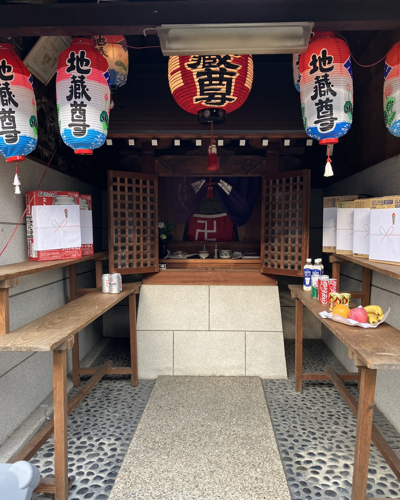
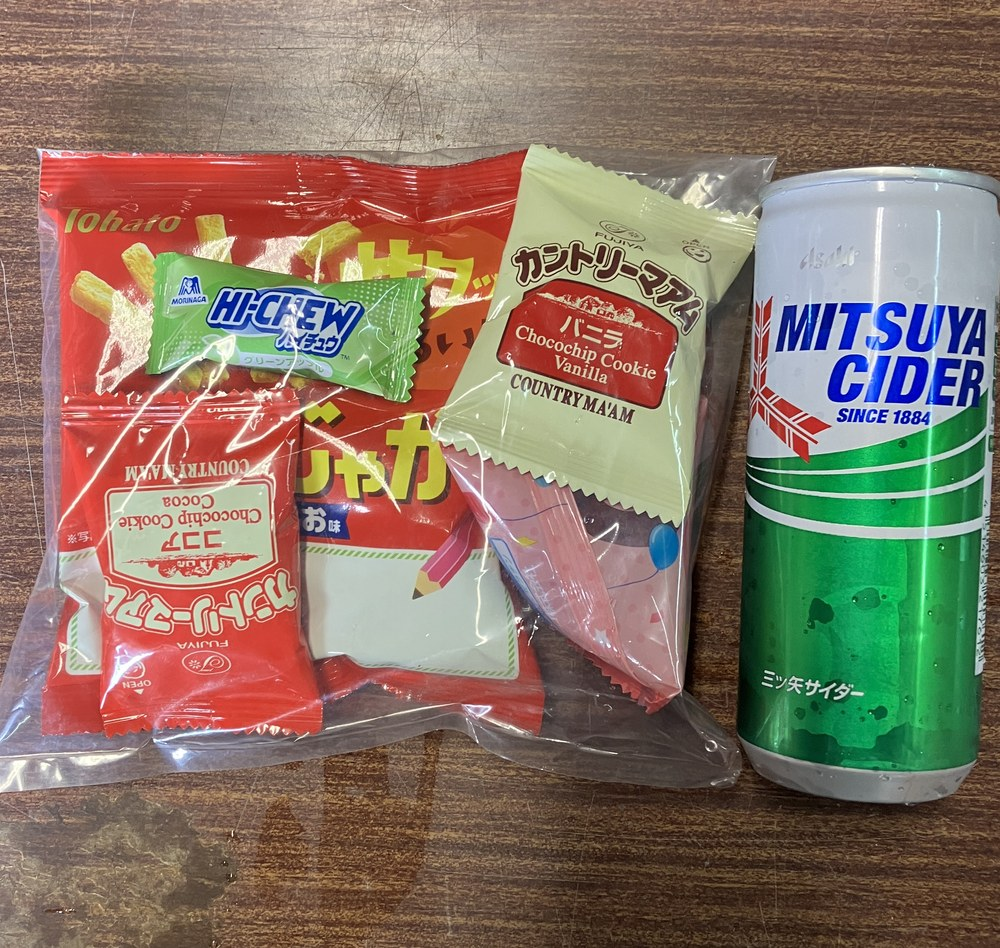
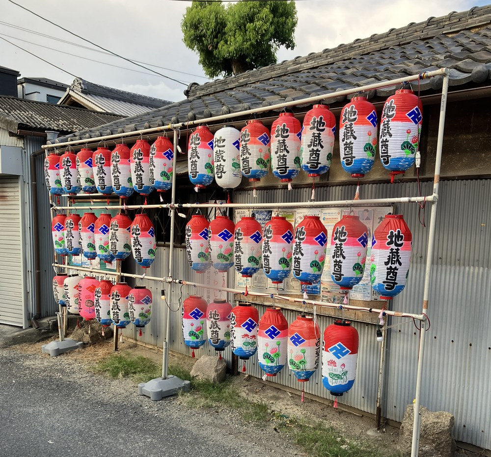
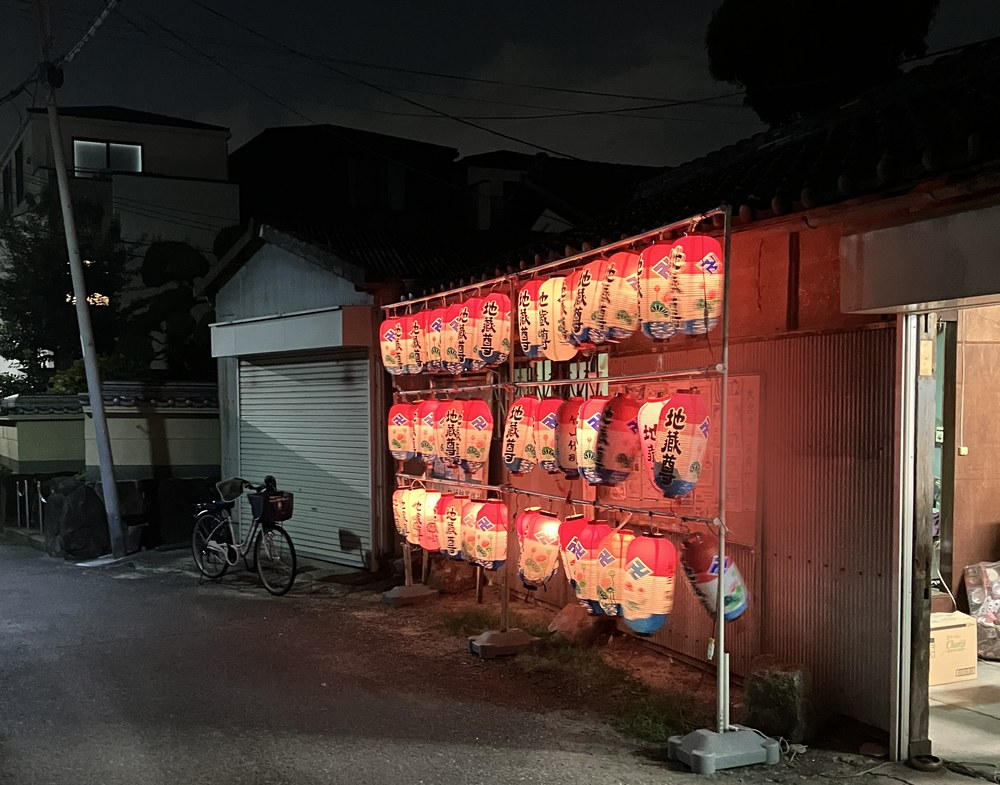

こんにちは、まっさんです。
8月23日の地蔵盆、無事に終えることができました。
初めてのことで分からないことだらけでしたが、なんとかやり切れました。同じように町内会や自治会で地蔵盆を担当することになった方の参考になればと思い、うまくいったことも反省点も、正直に書いておきます。

当日の会場。提灯を飾り、お供えを並べました（一部ぼかしています）
今回いちばんよかったと思うのが、お菓子の渡し方です。
あらかじめこちらで袋詰めしたものを配るのではなく、子どもたちに自分で好きなお菓子を詰めてもらう形にしました。
これが思った以上に盛り上がりました。遠慮して少し控えめに入れる子もいれば、袋からこぼれるほど詰め込む子もいて、その様子を見ているだけで楽しかったです。

お菓子とジュースのセット。中身は自分で選んでもらいました
今回、恥ずかしながら初めて知ったことがあります。
地蔵盆の提灯というのは、子どもが生まれたら、その子の提灯を作って飾ってもらうものなんですね。ずっと町会の備品だと思っていました。
そんな事情も知らないまま当日を迎えたので、途中で「うちの子の提灯が出てへんよ」と言われたときは、正直かなり焦りました。幸い無事に見つけることができてほっとしましたが、あれは一人ひとりにとって大事なものなんやと、身にしみて分かりました。

飾りつけた提灯。1軒に1つずつ、名前が入っています（一部ぼかしています）
今回いちばんの反省点は、提灯を飾るラックを1つしか組み立てなかったことです。
これには理由があります。事前の準備のとき、ラックの組み立て方がどうしても分からなかったんです。前任の方からは「簡単やから」と聞いていて、現場での引き継ぎも2回受けていたのですが、いざパイプを前にすると手が動きませんでした。組み立てのメモらしきものも複数あって、どれとどれを組み合わせるのかが分からず、結局1つ組むだけで精一杯でした。
以前の日記で「引き継ぎ期間は数ヶ月あってもいいのでは」と書きましたが、まさにこれでした。体が覚えている作業を、口頭とメモだけで次の人に渡すのは、想像以上に難しいです。
提灯については、もうひとつ考えたことがあります。
数が多いぶん、保管も出し入れも町会側の負担がなかなか大きいんです。それなら各ご家庭で自分の提灯を管理してもらって、地蔵盆のときに自分で持ってきて飾ってもらうのもありなんじゃないか、と。
本当にありがたかったのが、班長さんたちの協力です。
6人の方が最初から最後まで残ってくださって、おかげで片付けは1時間ほどで終わりました。これは想定よりずっと早かったです。
会場の小屋にはエアコンもなく、正直かなり暑くて大変な一日でした。それでも終わったあとに「やって楽しかった」と言ってもらえたのが、なによりうれしかったです。
今回でノウハウが少しはできました。何をどの順番で準備すればいいのか、どこでつまずくのかが、ようやく体感として分かった気がします。
だから来年は、もう少し子どもが楽しめるものを増やしたい。スーパーボールすくいあたりにチャレンジしてみようかと考えています。

日が暮れてから。提灯に灯りがともると、やっぱりきれいでした
盆踊りの出店のときもそうでしたが、1年目は分からないことだらけで、走りながら覚えるしかありません。それでも記録を残しておけば、来年の自分や、次に担当する人が少しは楽になるはずです。
ほな、また。